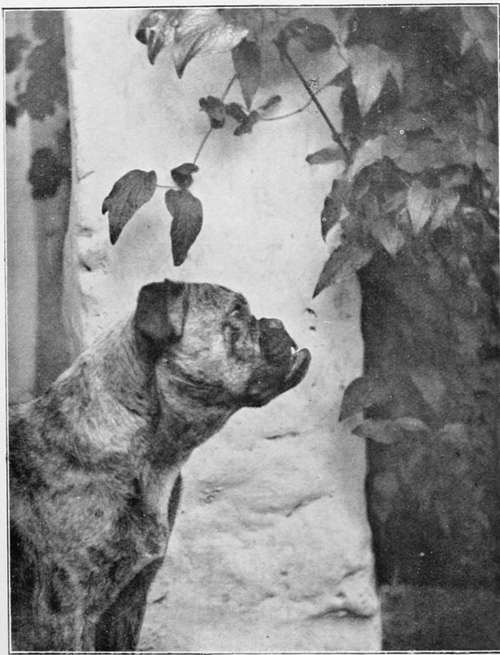

The Hand Camera In Use
Description
This section is from the book "The Barnet Book Of Photography", by Herts Barnet. Also available from Amazon: The Barnet Book Of Photography.
The Hand Camera In Use
We will suppose that you have one of the two types of camera briefly referred to above, and that at the time of reading this you are to a more or less extent ignorant both as to its powers or its manipulation. First and foremost in importance is the lens. It is to the quality of this essential feature that the technical excellence of your negatives will be mostly due. The beginner who has recently acquired a small camera for say half-a-guinea must not expect his instrument to be fitted with a lens that will have such wide capability as one fitted with the considerably more costly anastigmat, but nevertheless if he will from the very commencement recognise just how much his lens may be expected to achieve, he will be well along the path toward securing satisfactory negatives.
The first point that the amateur ought to be conversant with in regard to his lens is what is generally called " the working aperture," and which means the size of the circular opening of his lens with which a perfectly sharp image to the extreme corners of the size plate in use can be obtained. With the more highly efficient lenses of the present day this working aperture might be/5,/6, etc, with the cheaper varieties, however, it is usually that known as but for an explanation of these terms and further information the reader is referred to the chapters in this book on " Lenses," and on " Negative Making".
As will be readily understood, the smaller the aperture is the less the quantity of light that can pass through in a given time; therefore, in knowing the size of this aperture, we shall have to commence with the first factor that helps towards correct exposure, and consequently a rough idea as to when that exposure is likely to be efficient. Next in importance to the lens is the shutter. There are of these a countless variety used on the hand cameras of the present day, and but little service would be rendered to the reader by a detailed description of any. He has his camera, and with his camera his shutter, and he naturally wants to make the best of it. The best possible advice that can be given him is to find out, as with his lens, its range of capability, in other words its varying speeds. On purchasing a camera one may be told that this or that shutter gives a range of exposures from 1 second up to t^th, or that another gives time and instantaneous exposures. Probably the latter is more truthful, for the instantaneous may be anything from y^th second to /0th. Too much reliance should not be placed on these statements, and we would urge the possessor of a camera with an unknown shutter speed to make himself acquainted at the outset with an approximate idea of its rapidity. From time to time there have appeared in the photographic press many descriptions of means, more or less complicated, by which one may test by experiment the speed of his shutter. One such method which needs no special apparatus was described in the " Amateur Photographer" of February 19, 1903, and was found by actual trial to be far simpler perhaps than it reads. The method, somewhat condensed, is here given.
THE TRYSTING PLACE. By JOHN C DOUGLAS.
Turn a bicycle upside down and place in front of a dark background; place a piece of white paper to cover the interval between three spokes of the driving-wheel near the rim, use a fast plate in the camera, which latter should be placed as near the cycle as is practicable, the ground glass being parallel to the plane of the wheel. Let a friend now turn the crank at some known rate. Then take a photograph and measure the streak made by the paper on the resulting negative. The speed of rotation of the wheel is known, the angle through which it turns in a second is known, and a comparison of this angle with the angle through which the wheel has turned, obtained by measuring the streak in the picture, will give the time of exposure. There is a simpler way. Carefully pack and send to one of the well-known dealers with instructions to test speed of shutter. There is one well-known London house at least which undertakes to scientifically test the speed of any shutter for a nominal charge of a few pence. Anyhow, either way will do as long as you find the speed.
Knowing now the working aperture of your lens and the speed of your shutter, it but remains to choose just that plate or film which, under the conditions in which you will work, is of just a sufficient rapidity to ensure a correct exposure. It will be necessary here to call the tiro's attention to the fact that at the present day plates and films can be bought of a widely different degree of sensitiveness, and that all the recognised brands on the market have what is known as a speed number. The speed number is higher or lower according to the sensitiveness of the emulsion with which the support is coated. Again, all which are styled " extra rapid " are not of the same degree of sensitiveness. An exposure that would be amply sufficient for one brand might not be correct for another. It therefore behoves the beginner to make a choice of one plate, and as far as possible to use that one plate only; one of the greatest mistakes made by the majority of beginners is changeable-ness in reference to the plates used. All plates have their little idiosyncrasies ; some develop slower and gain density quicker, others vice versa, and it stands to reason that little knowledge and fewer good negatives will be secured if the beginner hover between several brands of plates of widely different characteristics.
The next and most important point of all to the hand camera man, in so far as correct exposure of his plates is concerned, is knowing the strength of the light. Light at various times of the day or year is said to be either more or less actinic ; in other words, a considerably shorter exposure is required for, say, middle day in June than it is, to give an extreme example, the same time in December. As this actinic power of light is difficult to judge, and very difficult to judge by the eye, recourse is had by a large number of photographers, especially those who use their cameras on a tripod, to a little mechanical device known as an "actino-meter." Briefly described, it is a strip of sensitised paper, which on exposure to light darkens to a standard tint in a time varying with the strength of light; this gives a basis on which to calculate the necessary exposure.
Continue to:
Tags
paper, print, negative, exposure, lens, development, camera, focus